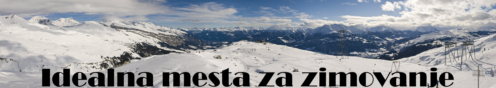
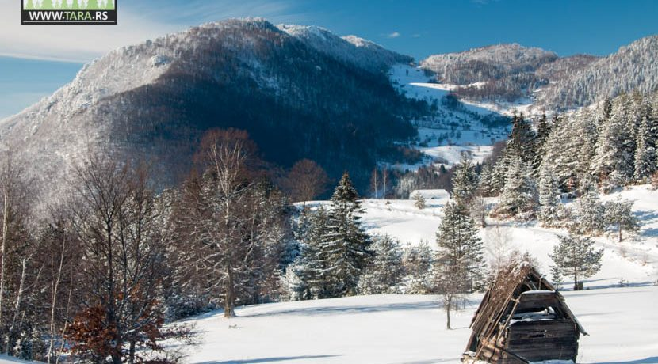
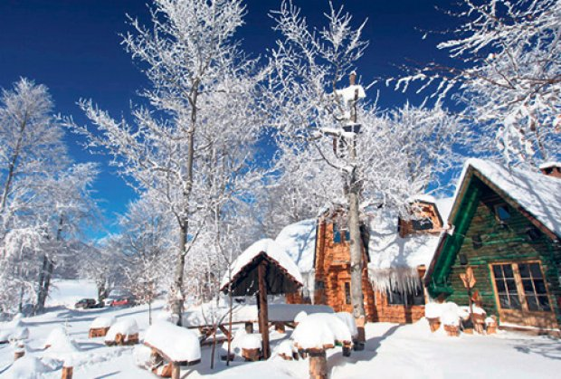
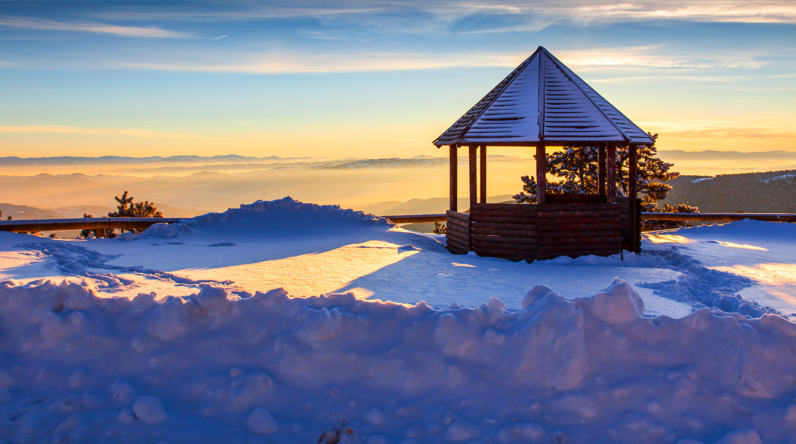

O nama
Planine
Komentari
Tara

Tara se nalazi u zapadnom delu Srbije i pripada unutrašnjem pojasu Dinarida. Prosečna nadmorska visina planine Tare je 1200 m. Najviši vrh je Kozji rid sa 1591 m. Tokom zimskog perioda povoljni su uslovi za sankanje, nordijsko, početničko skijanje. Mogućnosti alpskog skijanja su ograničene zbog visinske razlike od svega 400 m i dužine staza koje ne prelaze ni 2 km. Najkvalitetniji skijaški tereni su u reonu Predovog krsta, sa visinskom razlikom od 500 m. Dužina staze je od 3 do 5 km. Reljef Tare ima pogodna rekreativna svojstva, jer mali nagibi pogoduju šetnji, jahanju, različitim sportskim igrama, korišćenju trim staze i slično.
Ponuda
Stara planina
Lepote istočne Srbije su nadaleko poznate zahvaljujući netaknutoj prirodi Stare planine. Jedna od najlepših srpskih planina krije brojne zanimljivosti koje je svrstavaju u omiljene zimske destinacije, ali i one koje pružaju kvalitetan odmor i relaksaciju tokom letnjih meseci. Planina ima potencijal da postane jedno od najboljih skijališta u državi i regionu, zahvaljujući opremljenosti žičarama, ski liftovima i gondolom, kao i prirodnim uslovima koji na njoj vladaju. Osim skijanja, postoje i razne druge mogućnosti za istraživanje Stare planine, tako da ovde možete voziti bicikl, baviti se lovom ili uživati u ribolovu. Planina raspolaže sa 13 kilometara dugačkim skijaškim stazama i žičarama sa kapacitetom od oko 1.300 skijaša na sat. Prva gondola u Srbiji je izgrađena upravo na Staroj planini, na lokaciji Jabučko ravnište. Naročito je zanimljivo što je kao destinaciju za odmor biraju i starije i mlađe generacije, što dovoljno govori o posebnosti ove planine i njenog bogatstva.

Ponuda
Divčibare

Divčibare su poznato planinsko turističko mesto – visoravan, koja se nalazi u centralnom delu planine Maljen. Povoljan geografski položaj doprineo je da prema Divčibarama gravitira mnoštvo gradskih stanovnika, jer su one najbliže planinsko turističko mesto Beogradu i Vojvodini. Na Divčibarama je razvijen boravišni, zdravstveno–rekreativni, sportsko–rekreativni, izletnički turizam, a u nešto manjoj meri i lovni i ribolovni. Divčibare leže na nadmorskoj visini od 980 m. Sa svih strana su okružene visovima koji ih štite od vetrova, ublažavaju klimu, a istovremeno predstavljaju mesta sa kojih se pruža izvanredan vidik na bližu okolinu, ali i na neke udaljenije krajeve Srbije, pa čak i Republike Srpske. Dobar geografski položaj uslovljava dopiranje vazdušnih masa iz Jadranskog mora i sukobljavanje sa vazdušnim masama sa Karpata i Panonske nizije, čime se objašnjava prisustvo joda u vazduhu. Proleća i leta su kratka, zime su hladne i duge sa obilnim snežnim padavinama, a jeseni duge i blage.
Ponuda
1
2